使用Burp Suite测试Web Services服务
从这一章开始，我们进入了Burp的综合使用。通过一系列的使用场景的简单学习，逐渐熟悉Burp在渗透测试中，如何结合其他的工具，组合使用，提高工作效率。本章主要讲述在测试Web Services服务中，如何使用Burp Suite和SoapUI NG Pro的组合，对服务接口进行安全测试。 本章讲述的主要内容有：
- 使用场景和渗透测试环境配置
- 渗透测试过程中组合软件的使用
使用场景和渗透测试环境配置
在日常的web测试过程中，除了基于浏览器展现技术的客户端应用程序外，基于SOAP协议进行通信的WebService服务也很常见。WebService的出现是为了解决分布式、跨平台、低耦合而实现的不同编程语言之间采用统一的数据通信的技术规范，在应用程序中，常作为独立的业务模块对外提供具体的业务功能或者为前段提供数据处理的业务接口。因SAOP协议中的接口定义使用XML作为描述性语言，这与php、jsp之类的通信交互在渗透测试上还是有很大的差异。如果使用Burp 对通信消息进行拦截抓包，一次典型的消息内容如下图所示：
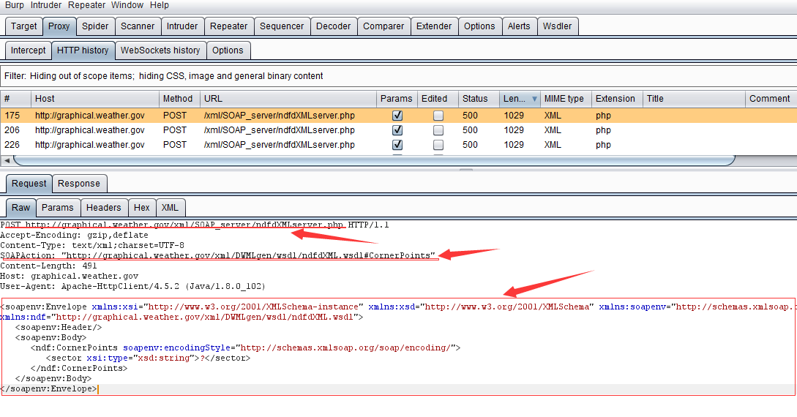
其http消息头中包含SOAPAction字段，且消息体为<soapenv:Envelope>封装的xml文本（更多关于WebService的文章请阅读者自行搜索）。正因为WebService这些特征，所以在渗透测试中我们也需要选择能解析SOAP协议和WSDL描述的软件。这里，我们使用的是SoapUI NG Pro 和Burp Suite。他们各自的作用分别是：
- SoapUI NG Pro： 渗透测试流程的发起，通信报文的解析、集合payload之后通信报文的重新组装等。
- Burp Suite： 代理拦截，跟踪通信过程和结果，对通信进行重放和二次处理等。
如果按照时序图来展现，他们在通信过程中，各自的时序位置如下： 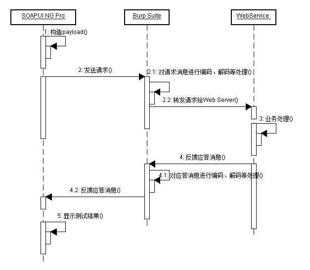 从图中我们可以看出，作为代理服务Burp起着通信中间人的作用，可以对消息进行拦截后的编码、解码、转发、丢弃等各种操作，并记录原始消息。而SoapUI NG Pro作为WebService的测试工具，通过构造不同类型的payload来测试、验证漏洞的存在。他们组合在一起，共同完成复杂场景下WebService服务的渗透测试过程中的安全性验证。
SoapUI NG Pro 是SmartBear公司继SoapUI Pro之后推出的企业应用级收费软件，其试用版下载地址为：https://smartbear.com/product/ready-api/soapui-ng/free-trial/。下载安装完毕后，打开软件的主界面大体如下图所示（其中图中1部分为不同功能视图之间的切换项，图中2部分为菜单栏，图中3部分为常用功能菜单，图中4为Project视图区，图中5为主工作区，图中6部分为属性设置区）： 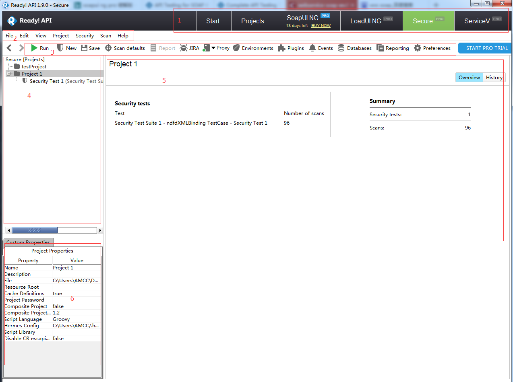 安装完毕后，我们首先要做的是将SoapUI NG Pro的代理服务指向Burp Suite。假设我的Burp Proxy设置为127.0.0.1:8080。则SoapUI NG Pro的配置是：
- 点击上图中3部分的Preferences，或者上图中2部分的【File】>>【Preferences】
在弹出的界面中打开proxy选项卡，录入代理地址和端口。
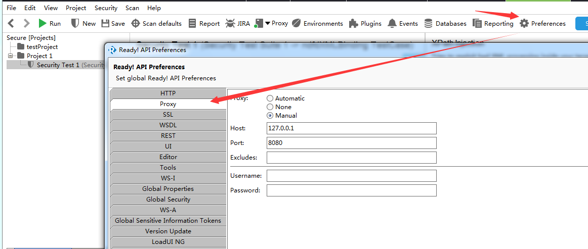
完成以上的配置后，我们对WebService的渗透测试环境已经基本具备，可以开始对一个具体的WebService服务进行渗透测试了。
渗透测试过程中组合软件的使用
渗透测试环境配置后，我们就可以开始测试。这里我们可以自己编写WebService服务端，也可以通过搜索引擎选择互联网上公开的WebService，我这里使用的是：http://graphical.weather.gov/xml/SOAP_server/ndfdXMLserver.php?wsdl
一次简单的渗透测试过程大体包含如下环节： 1.首先，我们通过SoapUI NG Pro 创建安全测试用例。如下图：
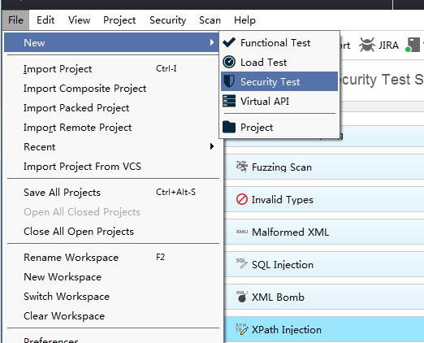
2.在弹出的界面中，选择通过WSDL创建，接着输入WSDL地址。如下图：
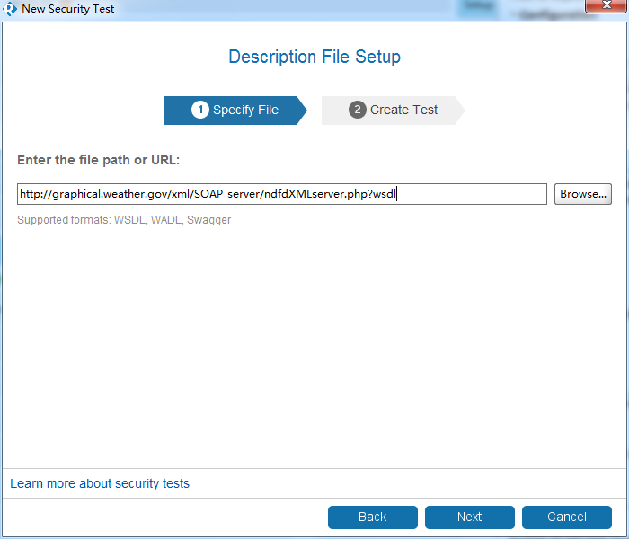
3.当SoapUI NG Pro对WSDL解析完成后，会自动生成一系列的安全测试项：
4.我们可以对上图中的安全测试项进行增加和删除，默认情况下，这些安全测试项都是选中的。比如，如果我们只需要测试是否存在XPath注入，则只要上图中的勾选最下面的一项即可。 当SoapUI NG Pro根据安全测试项，完成不同的测试用例的创建之后，主操作界面如下图所示：
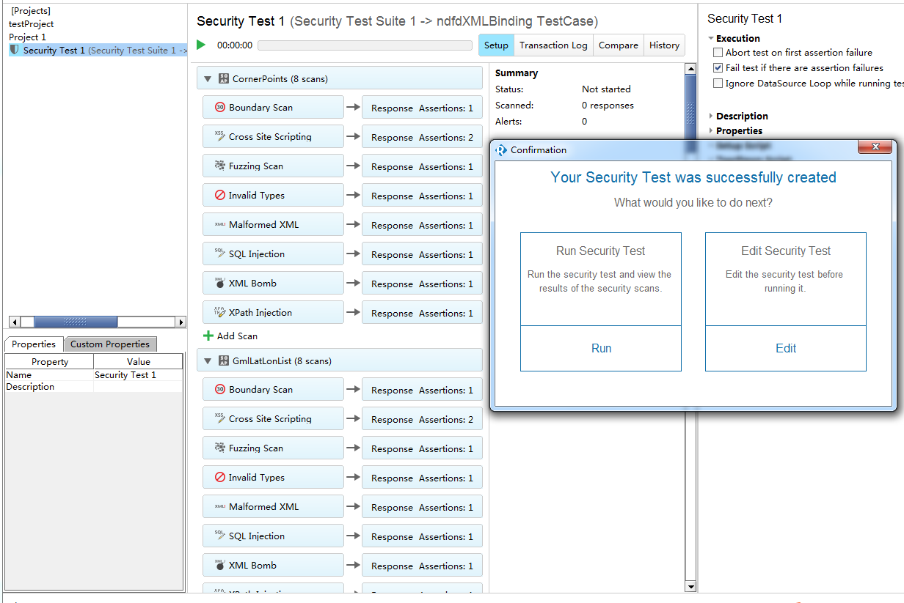
5.我们可以选择指定的SOAPAction或者某个SOAPAction下的某个安全项进行单一测试，也可以直接点击run运行所有的安全测试项。如果测试项过多的话，此操作执行时间会比较长，同时，如果并发数过多，会给服务器端造成压力，这是测试时候需要注意的。如下图所示，图中WebService接口正在安全测试中，进度条中显示调用的SOAPAction名称。 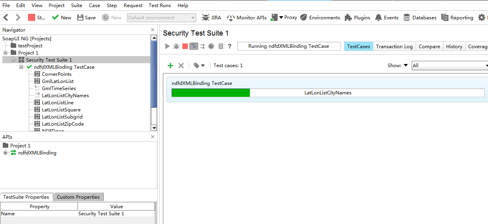
6.如果出现下图的状态，则表示测试进程已经执行完毕。 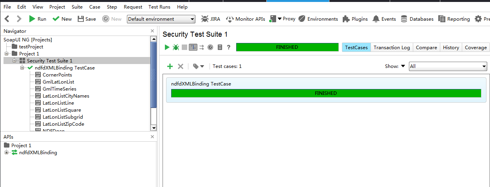
7.7. 此时，我们可以在Burp的Http history面板中查询到刚才发生的所有请求消息，通过不同的过滤条件查找我们关心的请求或响应消息，并发送到Burp的其他工具组件进行消息重放和处理、验证。 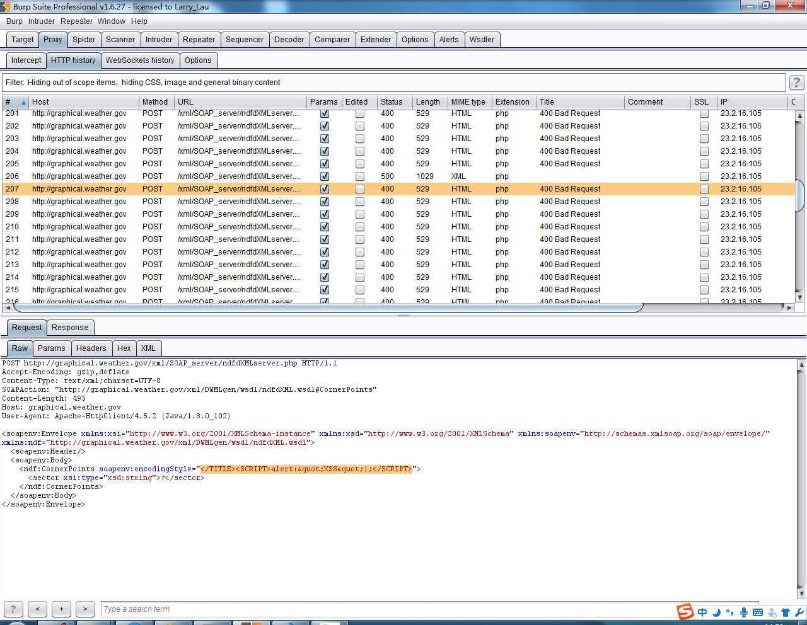
SoapUI NG Pro的安全测试项包括以下内容：
- 边界扫描
- SQL注入
- XPath/XQuery注入
- 模糊测试
- 无效的参数类型
- XML格式畸形
- XML炸弹
- 跨站脚本
- 上传附件安全
- 自定义扫描
下面就以SQL注入为例，我们看看SoapUI NG Pro的安全测试配置参数。 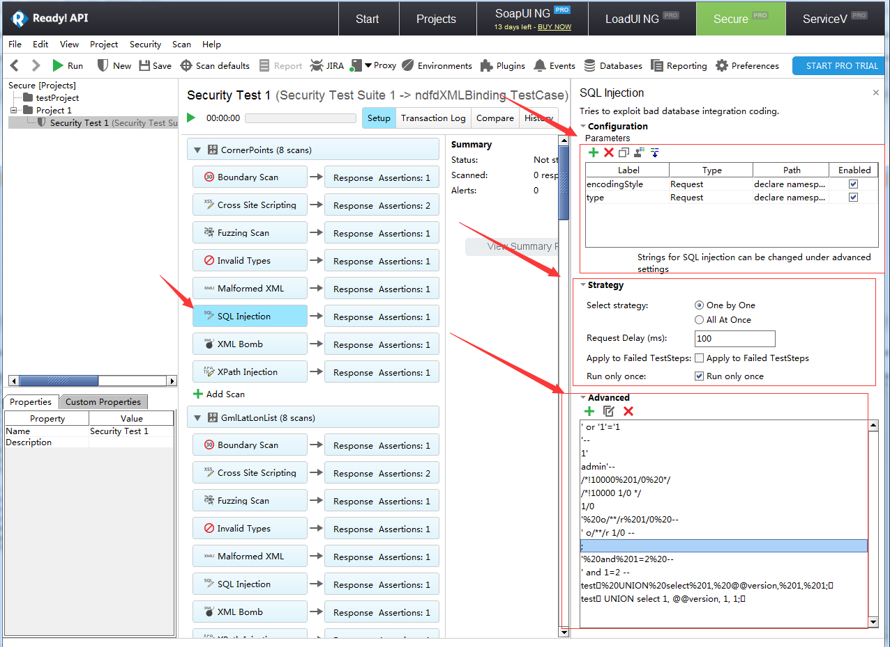 对于每一个安全测试项，其基本配置主要分三部分： 1.配置项（Configuration）
主要是指协议描述中定义的输入参数、编码类型、SOAP协议中的特定参数（namespace、import....)
2.自动化测试策略（Straegy）
主要设置测试过程中的请求延时、选择策略、运行方式等
3.高级选项（Advanced）
通常是指测试时所需要的payload值，或者生成payload的策略。通过上图我们也可以看出，payload的值是可以自定义添加的。在github上，fuzzdb是被广泛使用的字典库，我们可以使用它作为测试的payload字典。项目地址为：https://github.com/fuzzdb-project/fuzzdb
当我们配置完毕后，运行安全测试项时，可以在Burp中查看到发送的payload值，如下图（阴影选中部分）所示的XSS脚本测试的payload： 同时，我们根据http状态码，对应答进行排序，跟踪可疑的响应消息，获取服务器的敏感信息。如下图获取的服务器Banner信息： 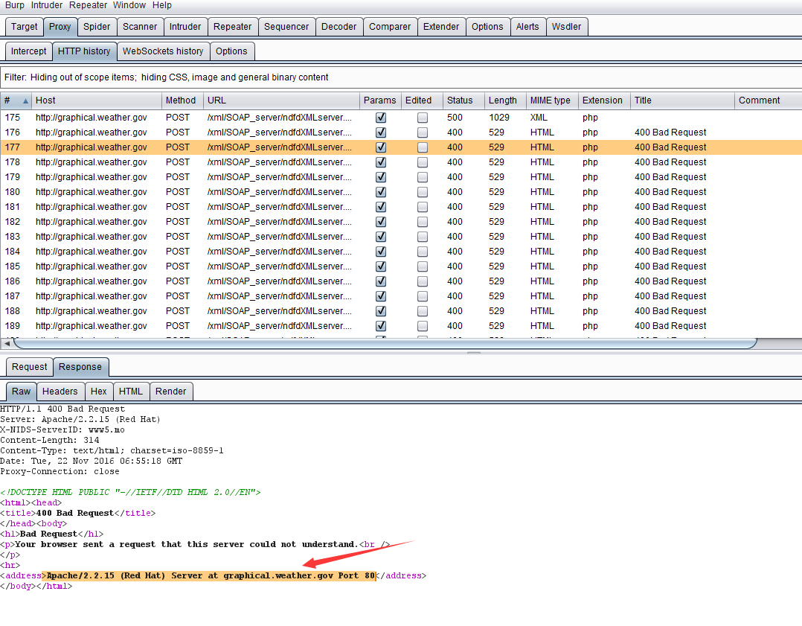 被Burp拦截到的消息记录，我们可以发送到Intruder，使用fuzzdb进行指定的fuzz测试；也可以发送到Repeater进行手工的消息内容修改和漏洞是否存在性的验证。具体到某个方面的漏洞，比如说Xpath注入漏洞，在测试过程中，需要测试人员理解Xpath的注入原理，理解Xpath的语法，根据服务器端的响应消息，自己手工构造特定的payload才能获得更重要的信息。这些都是在平时的工作中慢慢积累的，而不是光靠一款工具软件就作为万能的解决方案，希望读者能明白这个道理。
使用Wsdler测试WebService接口：
除了前面我们说的使用SOAPUI NG Pro 测试WebService外，在Burp里也有一个通过WSDL解析接口定义，手工测试WebService的插件：Wsdler
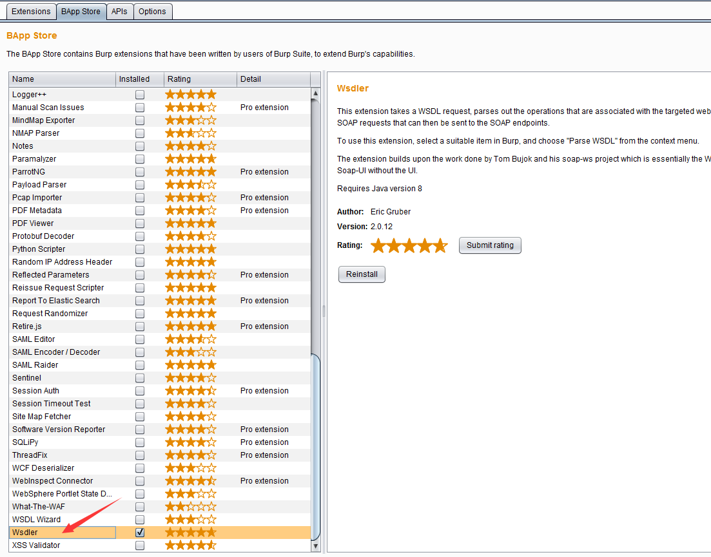
如果你安装了此插件，则在Burp的 Proxy >> History 中，可以直接使用【Parse WSDL】功能。
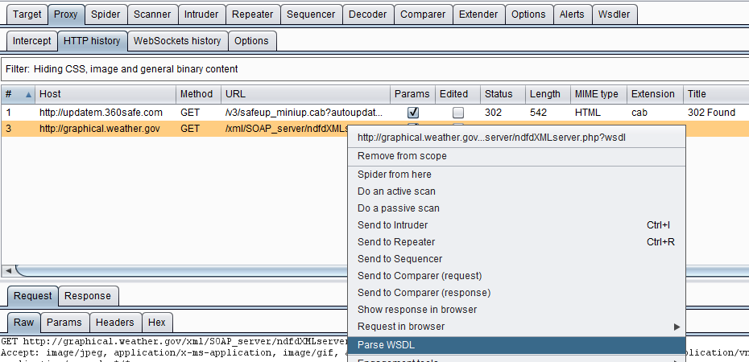
确认使用【Parse WSDL】解析功能后，此插件自动解析出服务的Operation、Binding、Endpoint。当选中某个Operation之后，可以查看SOAP消息文本。同时，可以发送到Burp的其他组件进行进一步操作。
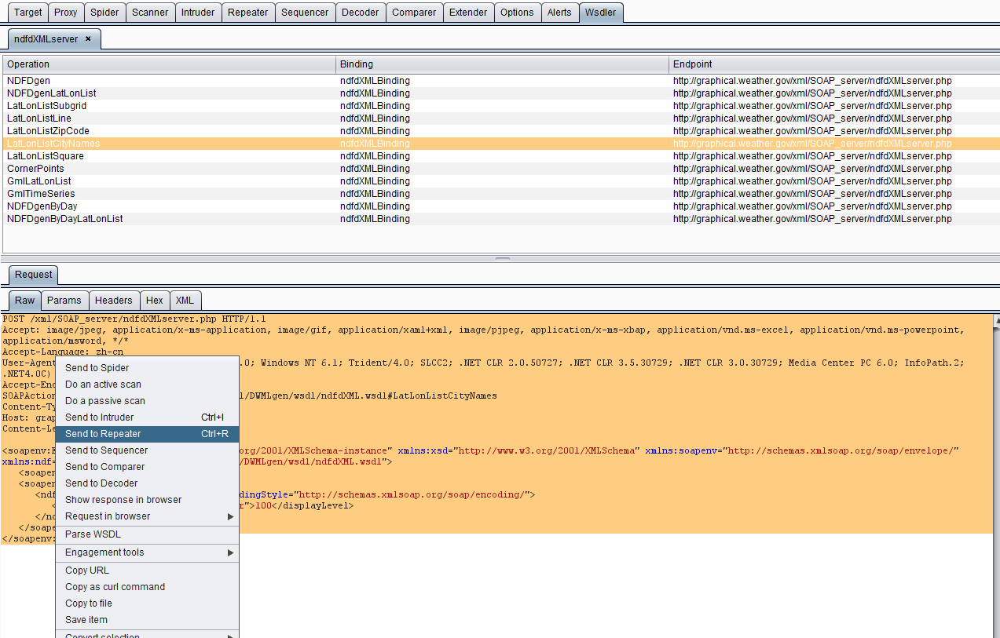
比如，我们将上图中的消息发送到Intruder，使用字符块（Character blocks）的对参数进行边界测试。
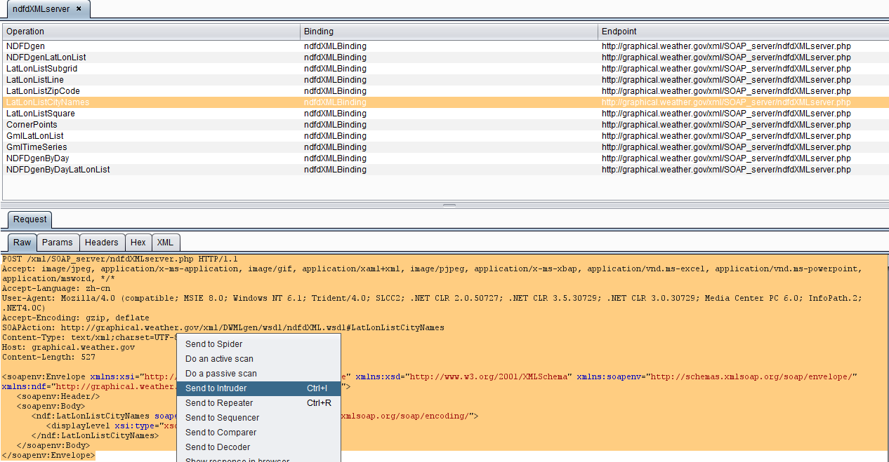
发送Intruder后的截图如下：
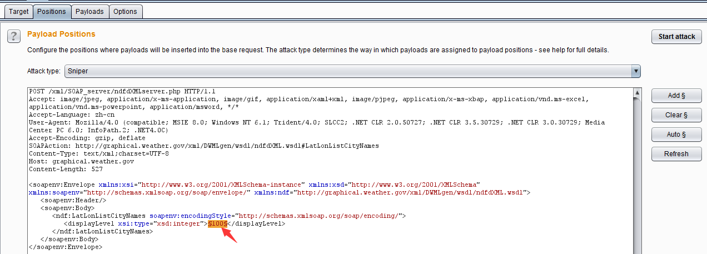
使用的payload为字符串1，从1到50，即1,11,111,1111......直到50个1，来测试参数的边界长度：
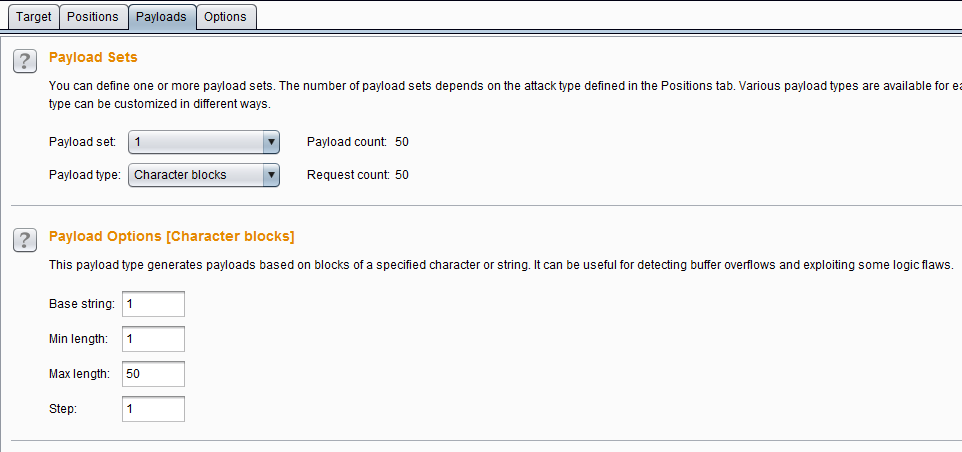
生成payload并执行后的结果如下图所示：
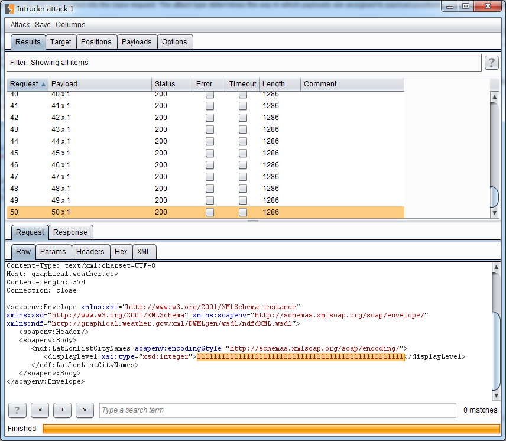
上面仅仅简单地叙述了Wsdler的使用，在实际的安全测试中，你可以使用Fuzzdb的字典，进行更复杂的渗透测试和功能验证。无论你使用什么样的工具，只要能通过一系列的自动化测试或者手工测试，完成WebService应用程序的安全脆弱性验证，保障应用程序的安全性，提供了应用程序的安全系统，这就达到我们做渗透测试的目的了。